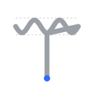
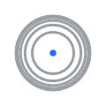

CONCEPT 01
Outward Spiral
DEPLOYED
120
48
One open stroke spirals outward with a bounded sine ripple, ending at a nozzle dot -- the single continuous non-planar bead, drawn directly. Already shipping in
index.html.
CONCEPT 02
Waveform Monogram

48
24
16
The crossbar of a "T" IS the bounded Z-wave, capped by two faint gauge lines (the z_amp_max ceiling), folding into a stem that ends at the nozzle dot. Signal-trace aesthetic, not a spiral.
CONCEPT 03
Conformal Contour Rings

48
24
16
Equal-elevation contours of a hemisphere, plan view -- rings bunch near the rim (steep) and spread near the pole (shallow), the literal signature of a shell conforming to a curved surface.
CONCEPT 04
Isometric Non-Planar Path
120
48
24
16
A single path drawn in true isometric projection: constant diagonal travel along the ground axis, Z riding a sine wave straight up and down on top of it. The one concept that looks 3D, not flat.
CONCEPT 05
Bounded Aperture Wave
120
48
24
16
A fixed ring (the printer profile's declared ceiling) with the Z-wave running through it, piercing the boundary exactly at its own horizontal diameter -- capped by the machine, never by a hardcoded constant.
CONCEPT 06
Constructed Trident
120
48
24
16
The product's own namesake, rebuilt as one unbroken toolpath: a 3-tine zigzag whose corners are fixed-radius arcs -- the exact corner-blending a G-code planner does so the head never stops mid-vertex.
CONCEPT 07a
Shafted Zigzag
restrained
120
48
24
16
06 with the two faults that made it read as a crown corrected: a real shaft descends from the centre, and the tines are evened out. Still one open stroke -- it runs down the shaft and back up, the way a single bead would have to.
CONCEPT 07b
Flared Guard
balanced
120
48
24
16
A filled silhouette rather than a stroke: the outline itself is the single closed path, with a flared guard where the tines meet the shaft. Reads as a trident at a glance instead of asking to be decoded.
CONCEPT 07c
Barbed Trident
bold
120
48
24
16
The most pronounced of the three: barbed outer tines and a tapered head, still one closed outline with fixed-radius fillets at every corner. The variant that would hold up as a home-screen app icon.